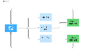
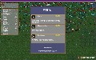
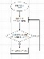

패시브 통합 콘텐츠 기획서 |
1.문서 개요 |
|
2. 기획 의도 |
1. 플레이어가 자신의 플레이 스타일에 맞춰 선택하여 캐릭터를 강화할 수 있는 성장 동기 부여 |
2. 보스 처치 시 강력한 효과의 패시브 (유일 등급)를 선택할 수 있게 하여 보스 처치 동기 부여 |
3. 랜덤 패시브 선택으로 다회차 동기 및 탐험 동기 (상점 발견) 부여 |
3. 패시브 설명 및 개요 | ||||||
유저 흐름 설명 | ||||||
1 | 유저가 전투와 맵 탐험을 반복 | |||||
2 | 상점을 진입 or 엘리트 몬스터 처치 시 => 상시 등급 패시브 3개중 1개 선택 | |||||
3 | 보스 몬스터 처치 시 => 유일 등급 패시브 3개 중 1개 선택 | |||||
4 | 선택된 패시브에 따른 효과를 "패시브_선택_기획" 문서의 시스템에 따라 플레이어의 캐릭터에 반영 | |||||
유저 | 플로우 차트 | 래퍼런스 자료: 뱀파이어 서바이벌의 레벨 업시 장비 선택 | ||||
 |  | |||||
3. 패시브 정보 | ||||||
출현 규칙 | ||||||
1. 보스 처치시 등장하는 패시브는 [유일] 등급으로 제한한다. | ||||||
2. [유일] 등급 패시브는 한번 선택하여 적용한뒤에는 선택창에서 재등장하지 않는다. | ||||||
3. 상점 구매와 엘리트 몬스터로 등장하는 패시브는 [상시] 등급으로 제한한다. | ||||||
4. [상시] 등급 패시브는 한번 선택하여 적용한 뒤에도 재등장한다. | ||||||
5. [상시] 등급 패시브는 퍼센트 증가 시 복리가 아닌 단순 덧셈식으로 계산한다. | ||||||
4 유형별 패시브 | ||||||
4.1 [상시] 등급 패시브 | ||||||
구분 | 등급 | 설명 | 캐릭터 A 스탯 | 캐릭터 B 스탯 | 능력치 증가량 | 상점 가격 |
name | grade | description | player_a | player_b | pass_value | price |
상시 패시브 1 | 상시 | 체력 증가 | player_hp | player_hp | 5(정수) | 1500 |
상시 패시브 2 | 상시 | 무기 공격력 증가 1 | player_atk | player_atk | 0.05 | 1500 |
상시 패시브 3 | 상시 | 무기 공격력 증가 2 | player_atk | player_atk | 0.1 | 1500 |
상시 패시브 4 | 상시 | 무기 공격력 증가 3 | player_atk | player_atk | 0.15 | 1500 |
상시 패시브 5 | 상시 | 베루아 무기 전체 공격력 증가 1 | player_atk | - | 0.05 | 1500 |
상시 패시브 6 | 상시 | 베루아 무기 전체 공격력 증가 2 | player_atk | - | 0.1 | 1500 |
상시 패시브 7 | 상시 | 베루아 무기 전체 공격력 증가 3 | player_atk | - | 0.15 | 1500 |
상시 패시브 8 | 상시 | 베루아 무기 전체 공격력 증가 4 | player_atk | - | 0.2 | 1500 |
상시 패시브 9 | 상시 | 카르테 무기 전체 공격력 증가 1 | - | player_atk | 0.05 | 1500 |
상시 패시브 10 | 상시 | 카르테 무기 전체 공격력 증가 2 | - | player_atk | 0.1 | 1500 |
상시 패시브 11 | 상시 | 카르테 무기 전체 공격력 증가 3 | - | player_atk | 0.15 | 1500 |
상시 패시브 12 | 상시 | 카르테 무기 전체 공격력 증가 4 | - | player_atk | 0.2 | 1500 |
상시 패시브 13 | 상시 | 이동속도 증가 1 | movespeed | movespeed | 0.05 | 1500 |
상시 패시브 14 | 상시 | 이동속도 증가 2 | movespeed | movespeed | 0.1 | 1500 |
상시 패시브 15 | 상시 | 이동속도 증가 3 | movespeed | movespeed | 0.15 | 1500 |
상시 패시브 16 | 상시 | 이동속도 증가 4 | movespeed | movespeed | 0.2 | 1500 |
4.1.1 유일 패시브 연계 칼럼 및 수식 계산 | ||||||
1. 상시 패시브 1 수식: | ||||||
4.1.2 상시 패시브 연계 데이터 테이블 |
1. Projectile_data |
2. PlayerData |
3. ShopItemData |
4.2 출현 규칙 |
1. 보스 처치시 등장하는 패시브는 [유일] 등급으로 제한한다. |
2. [유일] 등급 패시브는 한번 선택하여 적용한뒤에는 선택창에서 재등장하지 않는다. |
4.3 [유일] 등급 패시브 | ||||||
구분 | 등급 | 설명 | 캐릭터 A 스탯 | 캐릭터 B 스탯 | 능력치 증가량 | 상점 가격 |
name | grade | description | player_a | player_b | pass_value | price |
유일 패시브 1 | 유일 | 무기 공격력 증가 4 | player_atk | player_atk | 0.4 | 보스 처치 시 등장 |
유일 패시브 2 | 유일 | 이동속도 증가 5 | movespeed | movespeed | 0.3 | 보스 처치 시 등장 |
유일 패시브 3 | 유일 | 20회 공격 당 현재 체력 1 회복 | - | - | - | 보스 처치 시 등장 |
유일 패시브 4 | 유일 | 체력 50 증가 | player_hp | player_hp | 50 | 보스 처치 시 등장 |
4.3.1 유일 패시브 연계 칼럼 및 수식 계산 | ||||||
1. 유일 패시브 1, 2 수식: | ||||||
2. 유일 패시브 4 수식: |
4.3.2 유일 패시브 연계 데이터 테이블 |
1. Projectile_data |
2. PlayerData |
3. ShopItemData |
5. 연계 시스템 |
1. "패시브 선택" 시스템 |
2. "체력, 잔탄, 화면, 게임" 시스템 |
3. "무기 콘텐츠 통합" 기획서 |
4. "무기 레벨업" 시스템 |
캐릭터 A 상시 패시브 1 적용 수식: 패시브 적용전 캐릭터 A 스탯 (player_a_stat)+ 능력치 증가량 (pass_value)
캐릭터 B 상시 패시브 1 적용 수식: 패시브 적용전 캐릭터 B 스탯 (player_b_stat) + 능력치 증가량 (pass_value)
1.1. 상시 패시브 1의 능력치 증가량은 정수로 단순 덧셈 처리된다
상시 패시브 2~16 수식:
캐릭터 A 상시 패시브 2~16 적용 수식: 패시브 적용전 캐릭터 A 스탯(player_a_stat) * (1 + (능력치 증가량 (pass_value)))
캐릭터 B 상시 패시브 2~16 적용 수식: 패시브 적용전 캐릭터 B 스탯 (player_b_stat) * (1 + (능력치 증가량 (pass_value)))
상시 패시브 2부터 16까지의 증가량은 복리가 아닌 현재 해당 캐릭터 스탯에 능력치 증가량 비율을 곱한 뒤 덧셈 처리
캐릭터 A 유일 패시브 1, 2 적용 수식: 패시브 적용전 캐릭터 A 스탯(player_a_stat) * (1 + (능력치 증가량 (pass_value)))
캐릭터 B 유일 패시브 1, 2 적용 수식: 패시브 적용전 캐릭터 B 스탯 (player_b_stat) * (1 + (능력치 증가량 (pass_value)))
1.1. 유일 패시브 1,2의 능력치 증가량은 복리가 아닌 현재 해당 캐릭터의 스탯에 능력치 증가량 비율을 곱한 뒤 덧셈 처리된다.
캐릭터 A 유일 패시브 4 적용 수식: 패시브 적용전 캐릭터 A 스탯 (player_a_stat)+ 능력치 증가량 (pass_value)
캐릭터 B 유일 패시브 4 적용 수식: 패시브 적용전 캐릭터 B 스탯 (player_b_stat) + 능력치 증가량 (pass_value)
2.1. 유일 패시브 4의 능력치 증가량은 정수로 단순 덧셈 처리된다
3. 유일 패시브 3 적용 유저 플로우 차트:
